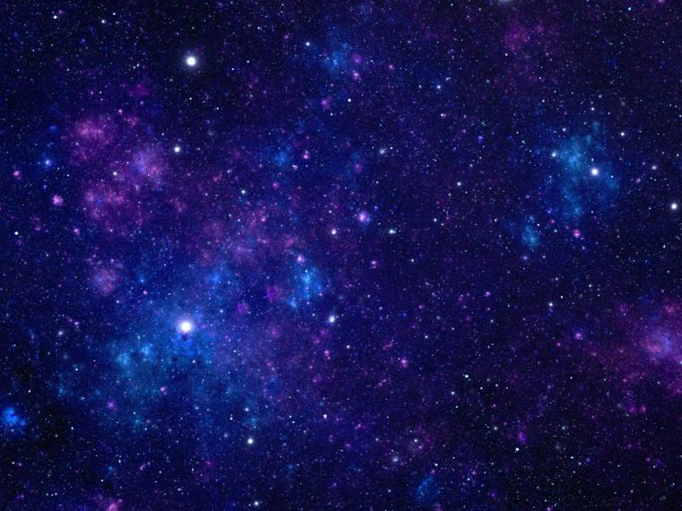

Materia constituida por partículas con cargas opuestas a la de la materia ordinaria, antipartículas. En la antimateria, los protones tienen una carga negativa, mientras que los electrones tienen una carga positiva. Se trata de una materia menos habitual.
El baricentro o centroide es el centro de masa de un sistema de cuerpos. Por ejemplo, el centro de masa del sistema solar.
Existen dos tipos de cúmulos: cúmulos galácticos y cúmulos estelares. Los cúmulos galácticos agrupan de 100 a 2.000 galaxias con una masa equivalnete a 2.000 billones de masas solares (ejemplo: cúmulo de Virgo). Los cúmulos de estrellas son agrupaciones de estrellas, esto es, porciones del espacio densamente pobladas por estrellas. Si son estrellas viejas se denominan cúmulos globulares y si son estrellas jóvenes -de menos de 100 millones de años de edad-, se llaman cúmulos abiertos.
El efecto Doppler es el cambio aparente de la frecuencia de una onda cuando existe un movimiento relativo entre la fuente emisora y el observador. El físico y matemático austríaco Christian Doppler fue quien postuló esta teoría en 1841.
 Ir al principio